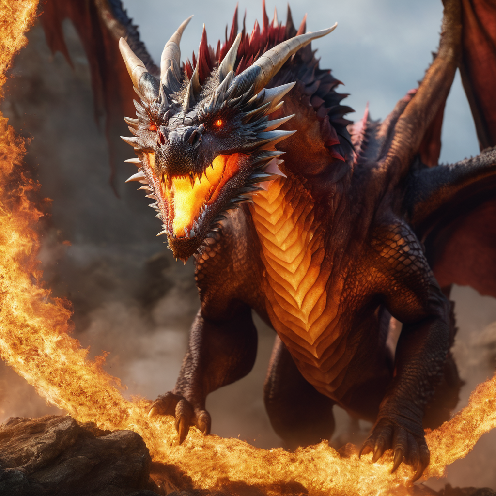
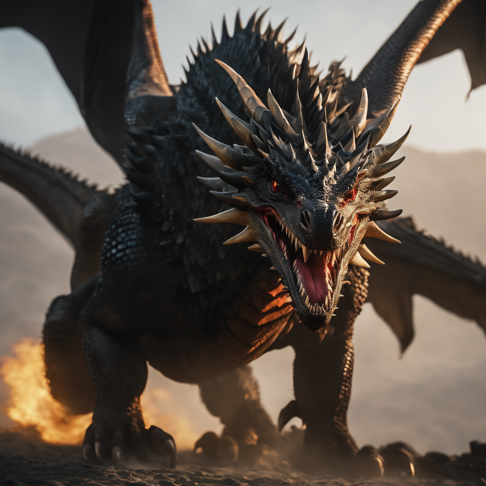

Veridrax
o Guardião da Floresta

O Senhor das Chamas
O senhor das chamas, um colosso alado, reina como um dos dragões mais imponentes dos céus. Seu corpo maciço e poderosas garras tornam-no uma força inigualável, capaz de esmagar adversários com facilidade. Contudo, é na maestria do elemento do fogo que ele se destaca. Sua respiração ardente é uma chama que devasta tudo em seu caminho, enquanto sua habilidade de controlar o fogo confere a ele uma vantagem estratégica única. Drako Ignitus, com seu peso colossal, é tanto uma força da natureza quanto um líder respeitado entre os dragões, deixando sua marca nas lendas que ecoam pelos reinos.
"À sombra das montanhas imponentes, o rei valente encarou o dragão rei, uma criatura majestosa com escamas reluzentes. O embate foi épico, mas o rei logo percebeu a terrível experiência que o aguardava. O rugido ensurdecedor do dragão ressoou, ecoando o poder ancestral que desafiava até os mais corajosos corações.."
A Sombra Negra
Numa terra misteriosa, o Wyvern Sombrio emerge das sombras com suas asas imponentes e escamas obsidianas, Com olhos que brilham como a noite eterna, este dragão é temido por sua habilidade única de se fundir à escuridão. Sua cauda venenosa, equipada com espinhos afiados, destaca-se como uma arma letal. Os rugidos do Wyvern Sombrio ecoam pela noite, sinalizando seu domínio sobre as sombras e seu poder de desaparecer e reaparecer sem aviso. Este ser sinistro é tanto uma criatura da escuridão quanto um mestre nas artes da invisibilidade, deixando todos que cruzam seu caminho envoltos em trevas.
"À sombra das montanhas imponentes, o rei valente encarou o dragão rei, uma criatura majestosa com escamas reluzentes. O embate foi épico, mas o rei logo percebeu a terrível experiência que o aguardava. O rugido ensurdecedor do dragão ressoou, ecoando o poder ancestral que desafiava até os mais corajosos corações.."
o Guardião da Floresta
Em uma exuberante floresta, reside Veridrax, um dragão verde de escamas reluzentes e poderes mágicos. Como guardião místico, ele protege o reino, usando suas garras para invocar a magia da natureza. Seus olhos brilhantes e asas estendidas irradiam sabedoria e proteção sobre a floresta. Reverenciado pelos habitantes, Veridrax responde às preces com curas mágicas e orientações sábias. À noite, seu rugido ecoa, lembrando a todos da presença do dragão verde entre as sombras, tecendo a magia que preserva a vida em sua morada encantada..
"Elysia Dracalume, a curandeira, testemunhou a aliança única com Veridrax enquanto ele defendia seu reino sombrio. Sob suas asas, ela aprendeu que o equilíbrio entre a cura e a chama era a chave para a verdadeira força. Contudo, a paz foi desafiada quando Nocturnus, um dragão das trevas, emergiu. Os céus se transformaram em um campo de batalha, onde Veridrax, o guardião ardente, colidiu com Nocturnus, emissário das sombras. Nessa épica dança entre luz e escuridão, a aliança de Elysia e Veridrax resistiu, lançando uma luz de esperança contra as ameaças que buscavam consumir seu mundo."
o Soberano das Profundezas
Em um reino distante chamado Hidralis, envolto pela vastidão do Oceano Infinito, a lenda de Thalassor, o Soberano das Profundezas, perdura. Este ancestral dragão aquático, conhecido como Aquaclavis, é venerado por sua sabedoria e controle magnífico sobre as águas. Suas escamas reluzentes, impregnadas com segredos ancestrais, emanam uma luz etérea nas noites de lua cheia. Como guardião benevolente, Aquaclavis protege marinheiros e pescadores, moldando mares turbulentos ou acalmando-os com sua voz suave. Seu poder transcendental conecta as gerações ao reino hidralino, inspirando gratidão e reverência, enquanto seu subnome, "Chave das Águas", ecoa a influência vital nas correntes do tempo.
Uma vez governou um reino antigo com magnificência. Em um ato de sacrifício grandioso, meu antigo amigo abdicou de suas terras para viver sob as ondas. Ele trocou o esplendor terrestre por uma existência aquática, tornando-se a lenda viva das águas. Seu reino, agora esquecido, ecoa em sua história como uma escolha nobre, renunciando à coroa para se tornar a essência do Oceano Infinito."